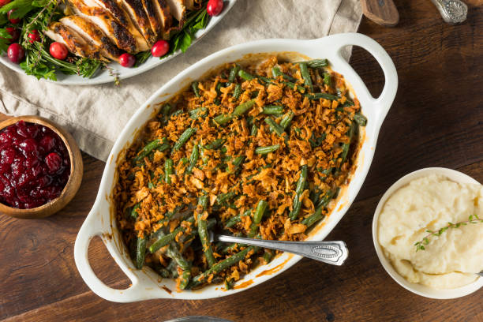

TOP STORY
Green Bean Cassarole Recipe Reaches Millions!
Blue Lobster: The Facts
Scientists once again dispel conspiracy: No, we aren't growing blue lobsters.
Republic News
New Survey Yields Controversy!
As it turns out, 33% of the Republic's programmers are starting to favor C#! BoM officer and JavaScript expert John Script considers...
World News
Savoy Minister Declares Pasta Breakers As "In Communion"
Prime Minister of Savoy declares that "pasta snappers are still Italians" in recent speech. Venice and Naples reply...